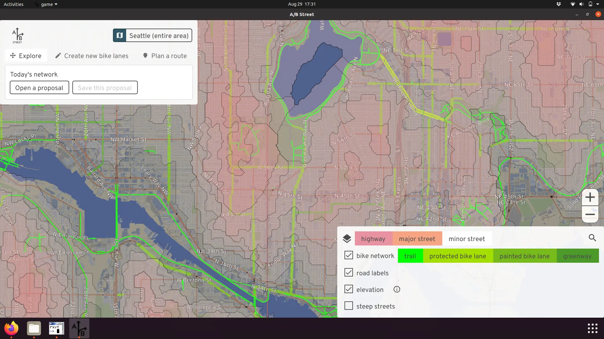
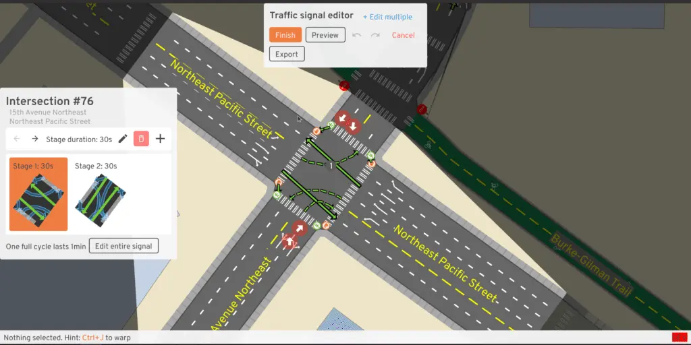
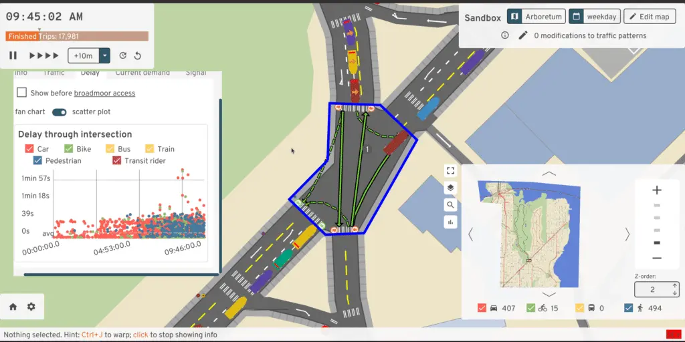
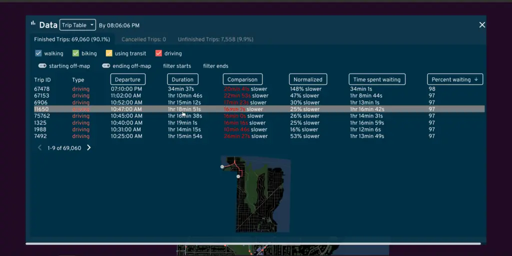
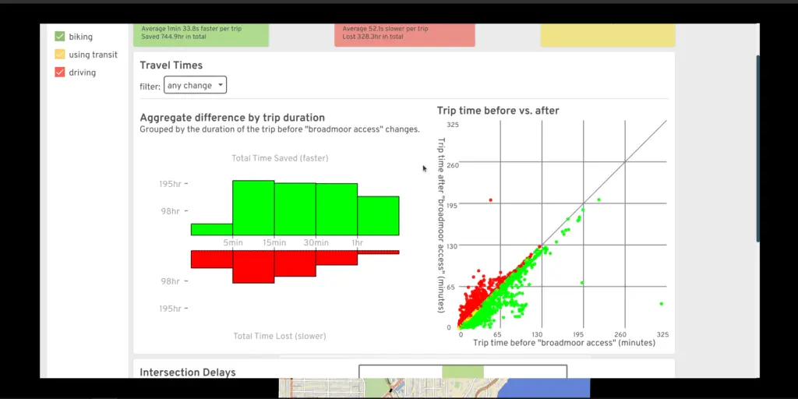

Or get a bird's-eye view of how everything is moving.

Watch the trailer:
A/B Street is a traffic simulation game exploring how small changes to roads affect cyclists, transit users, pedestrians, and drivers. You can transform street parking into a bus lane or fix a slow left turn at a traffic signal, measure the effects, then propose actually making the change. A/B Street uses game-like elements to gradually introduce all of the features of the simulation, with a tutorial and challenge modes.
A/B Street gives you a 2D representation of roads, with as much detail about bus/bike/turn/parking lanes, transit stops, traffic signals, and parking lots as possible, all from OpenStreetMap.
Depending on elevation data availability, some areas let you visualize steep streets -- because your bike network should be planned accordingly.
Using external travel demand models, you can explore patterns of where people live, work, and shop.
Using some external data about what trips people take on a typical day, you can simulate drivers, bicyclists, and pedestrians moving around. Every driving trip begins and ends with parking somewhere, which might be easy in suburban areas, but harder in cities.
You can follow individual people and watch them wrestle with problems.
Or get a bird's-eye view of how everything is moving.
A/B Street lets you change how road space is divided up. You can create regular vehicle lanes, bus-only lanes, bike lanes, street parking, and new sidewalks. You can either transform existing lanes, or slightly widen/shrink the road. You can reverse the direction of lanes, or close them down to simulate construction.
You can also change how traffic signals work. You can modify the timing if you notice left turns need more time, or set up actuated timing, so that the green light lasts longer when many vehicles are waiting. You can also change which movements are allowed each stage, so you could try out a dedicated left turn stage or a pedestrian all-walk/scramble cycle.
A/B Street lets you tell data-driven stories about both infrastructure and people.
  This project is the idea that started it all and the company's namesake. However, the scope of this project was too large, and since 2021, the focus has been on more focused projects. Many ideas from here still live on today in other projects.